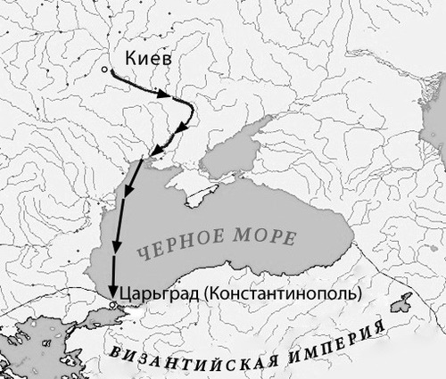
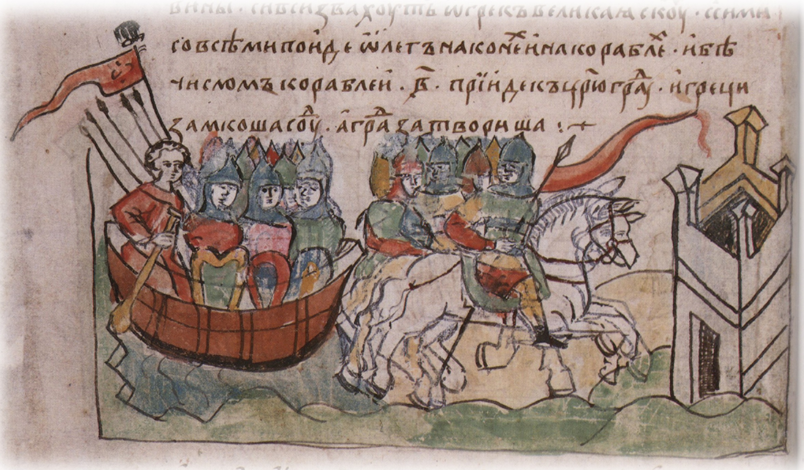

Поход Олега на Византию (907 год)
«Щит на вратах Царьграда»
Поход князя Олега на Константинополь в 907 году — одно из наиболее знаменитых событий ранней русской истории. Согласно «Повести временных лет», Олег собрал огромное войско: 2 000 ладей, в каждой по 40 воинов, а также привлёк наёмников из числа варягов, словен, чуди, кривичей, мерян, полян, северян, древлян, радимичей, хорватов, дулебов и тиверцев [[12]].
Византийский император Лев VI Мудрый, узнав о приближении русского войска, приказал закрыть ворота Константинополя и заблокировать гавань цепью. Однако Олег, согласно летописному преданию, приказал поставить корабли на колёса и при попутном ветре «паруса» двинулись по суше к стенам города. Поражённые греки предложили мир и дань [[11]].

Условия мира 907 года
- Византия обязалась выплатить дань: по 12 гривен на каждую уключину (итого огромная сумма)
- Русские купцы получили право беспошлинной торговли в Константинополе
- Русские гости (купцы) получали содержание за счёт византийской казны на время пребывания в городе
- Русские купцы могли брать в городе всё необходимое для обратного пути
- Олег получил богатые дары: золото, серебро, паволоки (дорогие ткани), овощи, фрукты, мёд
Маршрут похода Олега: Киев → Днепр → Чёрное море → Босфор → Константинополь
Общее расстояние — более 1500 км по воде и суше
Историческая достоверность
Современные историки по-разному оценивают поход Олега. Некоторые считают его полностью историческим событием, другие полагают, что летописное описание содержит легендарные элементы. Византийские источники не упоминают этот поход, что вызывает сомнения у части исследователей [[13]].
Тем не менее, факт заключения русско-византийского договора в начале X века не оспаривается. Договор 911 года, текст которого сохранился в летописи, свидетельствует о реальном политическом успехе Олега.
Военная тактика
Олег использовал комбинированную стратегию: морской поход флотилии ладей и сухопутное движение войск. Это позволяло контролировать оба берега Днепра и Чёрного моря.
Русские воины были опытными мореходами и воинами, способными действовать как на суше, так и на море.
Политические последствия
Поход Олега укрепил международный авторитет Древнерусского государства. Русь стала серьёзным игроком на международной арене, с которым была вынуждена считаться Византийская империя.
Договор создал правовую основу для русско-византийской торговли на десятилетия вперёд.
